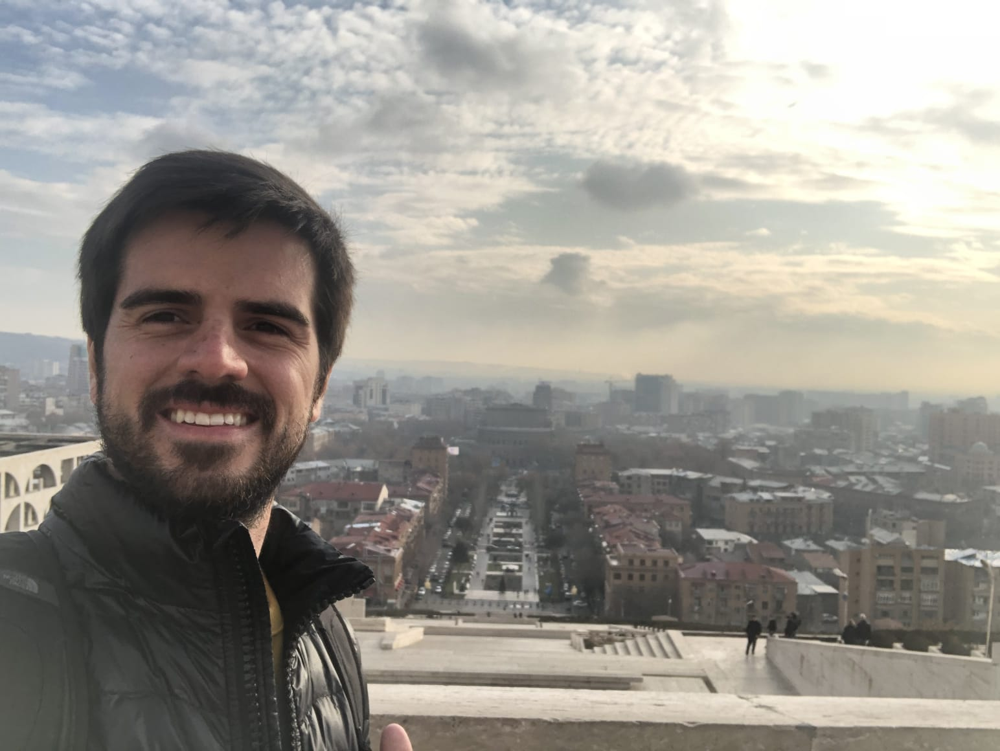

Nuestro Origen
Somos un equipo formado por una arquitecta y dos ingenieros civiles, que se hemos entablado una relación profesional desde el año 2015 donde tuvimos la oportunidad de trabajar en conjunto en el cálculo hidrológico de la cuenca del Río Cuarto ubicado en Córdoba, a partir del cual hemos seguido ejecutando proyectos de distinta índole.
Formación Académica e Intereses
Arq. Pérez Maure Pilar
Pilar nació en Córdoba el 26 de Julio de 1988, cursó sus estudios de arquitectura desde el año 2009 al 2016 en la Universidad Nacional de Córdoba. Además realizó varios cursos de hidrologia junto con el doctorado que actualmente se encuentra próxima a defender su tesis. Como gustos personales, es amante de la naturaleza por lo que tiene proyectado comenzar el posgrado en protección ambiental. En sus tiempos libres es nadadora de aguas abiertas y practica buceo recreativo
Ing. Riveros María José
María José nació el 6 de Noviembre de 1983 en la localidad de Alcira Gigena, al sur de la provincia de Córdoba. Cursó sus estudios universitarios en la Universidad Católica de Córdoba titulandose de ingeniería Civil en el año 2011. En el año 2016 obtuvo su maestría en Geotecnica y Fundaciones en la Universidad Tecnólogica Nacional. Actualmente se desempeña como Presidenta del colegio de ingenieros de la provincia y es participante activa en cursos estructuras tanto de edificios como viales. Su pasatiempo preferido es el yoga.
Ing. Pérez Maure Guillermo
Guillermo nació el 12 de Septiembre de 1989 en Córdoba. Es egresado de la carrera de Ingeniería Civil de la casa de estudios Universidad Tecnológica Nacional en el año 2016. Luego en el año 2019 obtuvo el título de grado de Agrimensor en la misma casa de estudios. Se desempeña en el área de hidraúlica y la parte de mensuras, como así también como desarrollador front end. En su tiempo de ocio lo dedica a tocar la guitarra y hacer streamings de contenido cultural.
